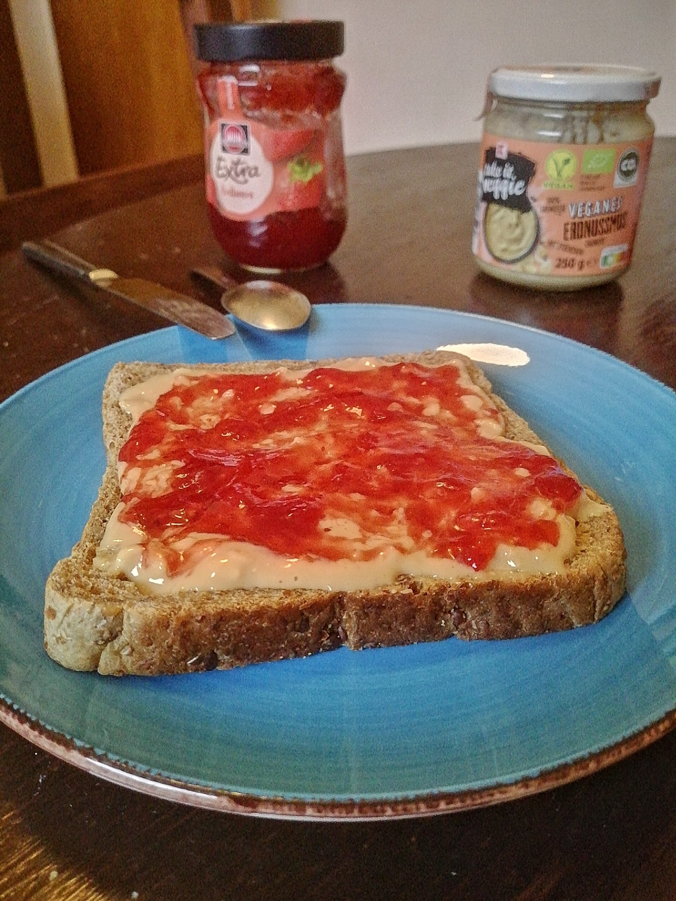

Odin Recipes
Peanut butter & jam toast

Description
Nothing beats this delicious tartine de confiture au beurre de cacahuète.
Ingredients
- a slice of bread
- two tea spoon of your favorite jam
- two tea spoon of peanut butter
Steps
- Choose a slice of bread from the package, lay it on a small plate.
- Gently spread the peanut butter on top of the slice of bread. Pro-tip: use a rounded knife to spread it more evenly.
- Add the jam on top of the peanut butter. Pro-tip: don't go too close to the edges!
- Let it rest for at least ten minutes.
- Lay people use their hands, but I trust you to know better and use fork and knife like a respectable person.